Cet exercice a pour but de mettre en pratique les principales fonctions de statistiques descriptives (univariées et bivariées) à l’aide du jeu de données iris.
Le jeu de données Iris, introduit par le statisticien Ronald Fisher en 1936, est l’un des jeux de données les plus célèbres en statistique. Intégré dans R, il regroupe 150 observations de fleurs d’iris réparties équitablement entre trois espèces : Setosa, Versicolor et Virginica. Chaque spécimen est décrit par quatre caractéristiques morphologiques exprimées en centimètres : la longueur et la largeur des sépales, ainsi que la longueur et la largeur des pétales. Sa structure simple et équilibrée en fait l’outil pédagogique idéal.
Préparation des données
Structure générale
1. Préparation des données
Chargez le jeu de données iris et affichez les 6 premières lignes pour en comprendre la structure.
La fonction head() est l’une des premières commandes que l’on utilise lors de l’exploration de données. Elle permet d’afficher les 6 premières lignes d’un objet.
2. Variables
Identifiez la nature des variables. Combien y a-t-il de variables quantitatives et qualitatives ?
La fonction str() (pour structure) est l’outil indispensable pour comprendre l’architecture interne d’un jeu de données. Elle expose la “mécanique” de l’objet et affiche :
La classe de l’objet (ex : data.frame).
Les dimensions : le nombre total d’observations (lignes) et de variables (colonnes).
Le détail par variable (colonne) :
Le nom de chaque variable
Le type de données : num (numérique / quantitative), int (entier / quantitative), Factor (catégorielle / qualitative), ou chr (caractère / qualitative)
Un échantillon des premières valeurs
Base de données endommagée
Ici le jeu de données iris est parfait. Il est complet et il n’y a pas d’erreurs de saisie. Pour illustrer un cas réel on va définir une version corrompu du jeu de données iris.
iris_corrompu = iris
On transforme certaines colonnes en texte pour accepter les erreurs
Valeurs impossibles ou extrêmes (Outliers) : Erreur d’unité (cm vs mm) ou doigt qui glisse sur le clavier.
iris_corrompu$Petal.Length[50] ="145"# Un pétale de 1 mètre 45...iris_corrompu$Petal.Length[60] ="-1.2"# Une longueur négative
Erreurs de saisie dans les noms (Catégories) : Espaces en trop ou fautes de frappe qui créent de nouvelles espèces par erreur
iris_corrompu$Species[10] ="setosa "# Espace à la finiris_corrompu$Species[55] ="Versicolor"# Majuscule non conformeiris_corrompu$Species[110] ="virginicaa"# Double lettre
Si vous voyez chr au lieu de num pour des mesures, il y a une erreur de saisie. Pour repérer les intrus et voir exactement quelles valeurs empêchent la conversion en nombres, on peut forcer la conversion et regarder ce qui devient un NA, c’est à dire une valeur manquante.
On voit que des Warning sont apparus pour la tentative de conversion de Sepal.Length et Sepal.Width. On affiche donc les lignes qui ont posé problème :
Concernant les variables que l’on sait quantitatives, il nous reste à vérifier les outliers. Un bon moyen d’itentifier rapidement ces ouliers dans un jeu de données est d’utiliser les fonctions boxplot et summary.
# Conversion rapide des 4 premières colonnes au cas oùiris_corrompu[, 1:4] <-lapply(iris_corrompu[, 1:4], as.numeric)# Tracer chaque variableboxplot(iris_corrompu$Sepal.Length, main ="Sepal Length", col ="orange", ylab ="cm")boxplot(iris_corrompu$Sepal.Width, main ="Sepal Width", col ="lightblue", ylab ="cm")boxplot(iris_corrompu$Petal.Length, main ="Petal Length", col ="lightgreen", ylab ="cm")boxplot(iris_corrompu$Petal.Width, main ="Petal Width", col ="pink", ylab ="cm")
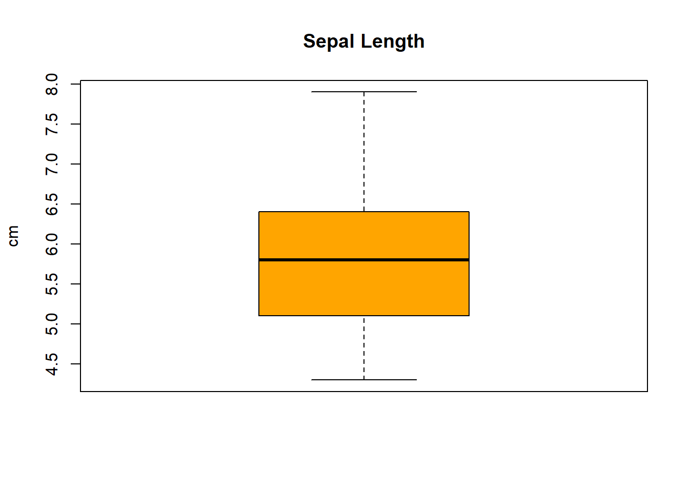
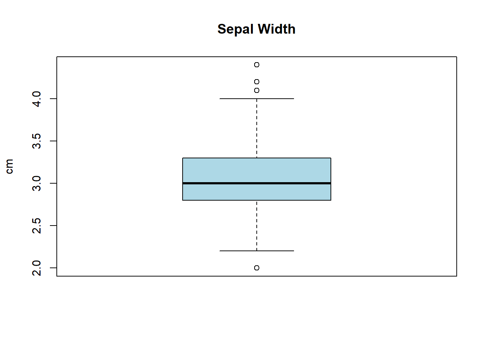
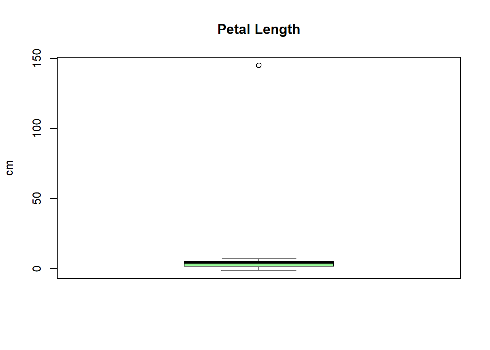
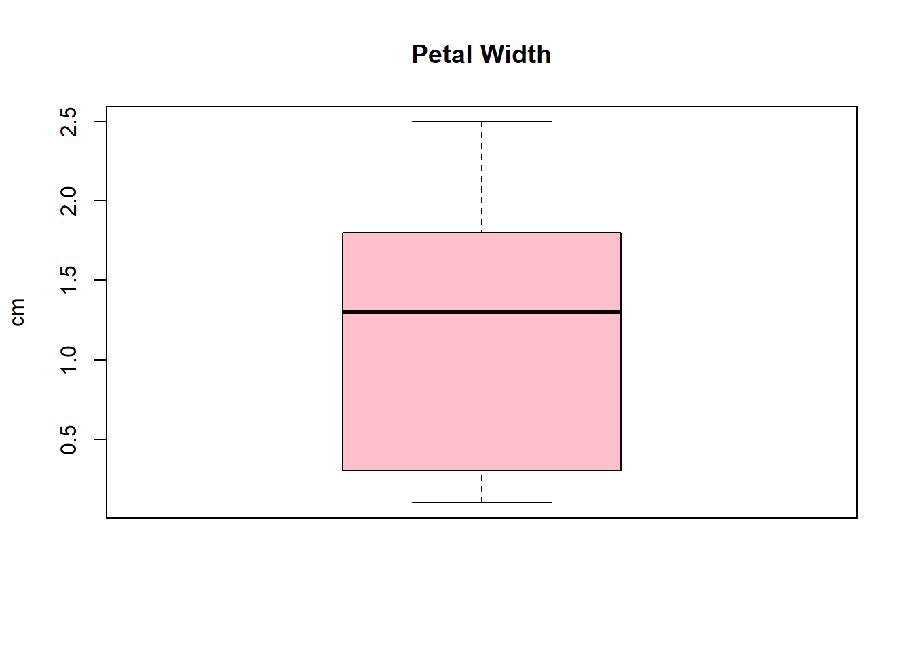
summary(iris_corrompu$Sepal.Length)
Min. 1st Qu. Median Mean 3rd Qu. Max. NA's
4.30 5.10 5.80 5.85 6.40 7.90 2
summary(iris_corrompu$Sepal.Width)
Min. 1st Qu. Median Mean 3rd Qu. Max. NA's
2.000 2.800 3.000 3.058 3.300 4.400 5
summary(iris_corrompu$Petal.Length)
Min. 1st Qu. Median Mean 3rd Qu. Max.
-1.200 1.600 4.400 4.681 5.100 145.000
summary(iris_corrompu$Petal.Width)
Min. 1st Qu. Median Mean 3rd Qu. Max.
0.100 0.300 1.300 1.199 1.800 2.500
Les outliers identifiées sont :
le maximum de Petal.Length égale à 145.000
et la valeur négative pour Petal.Length égale à -1.200
Pour les variables qualitatites il est utiles de vérfiers les modalités, de façon à voir s’il y a des erreurs de saisie dans les noms.
Pour les modalités où l’effectif est tres faible, on sait qu’il y eu une erreur de saisie. ::: {.callout-caution icon=“false” appearance=“simple”} Les nouvelles erreurs identifiées sont :
les espaces après setosa,
la majuscule sur Versicolor
et le double a à la fin de virginicaa. :::
Data Cleaning
Maintenant que les erreurs sont identifiées, on utilise des fonctions de remplacement pour les corriger. La fonction gsub() est un très bon outil pour corriger les erreurs de frappe.
# Remplacer la virgule par un point pour les variables quantitativesiris_corrompu$Sepal.Length =gsub(",", ".", iris_corrompu$Sepal.Length)iris_corrompu$Sepal.Width =gsub(",", ".", iris_corrompu$Sepal.Width)iris_corrompu$Petal.Length =gsub(",", ".", iris_corrompu$Petal.Length)iris_corrompu$Petal.Width =gsub(",", ".", iris_corrompu$Petal.Width)
# Remplacer la lettre 'O' par le chiffre '0' pour les variables quantitativesiris_corrompu$Sepal.Length =gsub("O", "0", iris_corrompu$Sepal.Length)iris_corrompu$Sepal.Width =gsub("O", "0", iris_corrompu$Sepal.Width)iris_corrompu$Petal.Length =gsub("O", "0", iris_corrompu$Petal.Length)iris_corrompu$Petal.Width =gsub("O", "0", iris_corrompu$Petal.Width)
# Remplacer les pseudo valeurs manquantes par du vrai NA pour toutes les variablesvaleurs.manquantes =c(" ", "?", "N/A")iris_corrompu$Sepal.Width[iris_corrompu$Sepal.Width %in% valeurs.manquantes] =NA
# Supprimer les espaces au début et à la fin des chaînes de caractère pour la variable qualitativeiris_corrompu$Species =trimws(iris_corrompu$Species)
# Tout mettre en minuscules pour la variable qualitativeiris_corrompu$Species =tolower(iris_corrompu$Species)
# Remplace "virginicaa" par "virginica" pour la variable qualitativeiris_corrompu$Species <-gsub("virginicaa", "virginica", iris_corrompu$Species)
On retrouve bien les trois modalités pour la variables qualitatives Species :
table(iris_corrompu$Species)
setosa versicolor virginica
50 50 50
# S'occuper des ouliers# On s'assure que la colonne est numérique au départiris_corrompu$Petal.Length <-as.numeric(iris_corrompu$Petal.Length)# --- Option 1 : Remplacer par NA ---iris_corrompu_option1 <- iris_corrompuiris_corrompu_option1$Petal.Length[iris_corrompu_option1$Petal.Length >10| iris_corrompu_option1$Petal.Length <0] <-NA# --- Option 2 : Remplacer par la médiane ---iris_corrompu_option2 <- iris_corrompu# Calculer la médiane (en ignorant les erreurs >10 ou <0 et les NA)# On calcule la médiane sur les valeurs "réalistes" uniquementval_mediane <-median(iris_corrompu_option2$Petal.Length[iris_corrompu_option2$Petal.Length <=10& iris_corrompu_option2$Petal.Length >=0], na.rm =TRUE)# Appliquer le remplacement dans le tableauiris_corrompu_option2$Petal.Length[iris_corrompu_option2$Petal.Length >10| iris_corrompu_option2$Petal.Length <0] <- val_mediane
On réexamine la structure, pour iris_corrompu_option1 et iris_corrompu_option2 :
# Denière vérification pour iris_corrompu_option1iris_corrompu_option1$Sepal.Length[grep("[^0-9.]", iris_corrompu_option1$Sepal.Length)]iris_corrompu_option1$Sepal.Width[grep("[^0-9.]", iris_corrompu_option1$Sepal.Width)]iris_corrompu_option1$Petal.Length[grep("[^0-9.]",iris_corrompu_option1$Petal.Length)]iris_corrompu_option1$Petal.Width[grep("[^0-9.]",iris_corrompu_option1$Petal.Width)]# Denière vérification pour iris_corrompu_option2iris_corrompu_option2$Sepal.Length[grep("[^0-9.]", iris_corrompu_option2$Sepal.Length)]iris_corrompu_option2$Sepal.Width[grep("[^0-9.]", iris_corrompu_option2$Sepal.Width)]iris_corrompu_option2$Petal.Length[grep("[^0-9.]",iris_corrompu_option2$Petal.Length)]iris_corrompu_option2$Petal.Width[grep("[^0-9.]",iris_corrompu_option2$Petal.Width)]
character(0)
character(0)
numeric(0)
character(0)
character(0)
character(0)
numeric(0)
character(0)
On convertit enfin les 5 variables dans des types adaptées (num pour les variables quantitatives et factor pour la variable qualitative).
# On convertit les 4 premières colonnes en numérique# Note : Les erreurs de texte deviendront automatiquement des NA iciiris_corrompu_option1[, 1:4] <-lapply(iris_corrompu_option1[, 1:4], as.numeric)iris_corrompu_option2[, 1:4] <-lapply(iris_corrompu_option2[, 1:4], as.numeric)# On convertit la colonne Species en factoriris_corrompu_option1$Species <-as.factor(iris_corrompu_option1$Species)iris_corrompu_option2$Species <-as.factor(iris_corrompu_option2$Species)
De nouveau on réexamine la structure, pour iris_corrompu_option1 et iris_corrompu_option2 :
Une fois les erreurs de saisie et les valeurs aberrantes traitées, nous disposons d’une base de données fiable pour nos analyses descriptives
Valeurs Manquantes
Etant donné que le jeu de données iris est parfait, il n’y a pas de valeurs manquantes. Nous allons en créer artificiellement.
library(missForest)# Insére 10% de NA dans tout le jeu de données irisiris_miss <-prodNA(iris, noNA =0.1)# VérificationcolSums(is.na(iris_miss))
Sepal.Length Sepal.Width Petal.Length Petal.Width Species
14 15 14 18 14
Nous avons à présent le décompte des valeurs manquantes pour chaque variable.
Analyse Quantitative des valeurs manquantes
Nous commençons par une approche numérique pour obtenir des chiffres précis sur l’ampleur des manques.
# Fonction pour calculer la proportion de valeurs manquantes par variableprop.missing.val =function(data) {# Calcul du nombre de valeurs manquantes par colonne nb.missing.val <-sapply(data, function(x) sum(is.na(x)))# Calcul de la proportion de valeurs manquantes prop.missing <- nb.missing.val /nrow(data)# Création d'un dataframe pour le résultat resultat <-data.frame(Nombre = nb.missing.val, Proportion = prop.missing)return(resultat)}# Utilisation de la fonction avec notre base de donnéesAnalyse.Missing.Values =prop.missing.val(iris_miss)# Affichage du résultatAnalyse.Missing.Values
Nombre Proportion
Sepal.Length 14 0.09333333
Sepal.Width 15 0.10000000
Petal.Length 14 0.09333333
Petal.Width 18 0.12000000
Species 14 0.09333333
Ce tableau permet de décider si une variable doit être supprimée (souvent si > 50% de manques) ou imputée.
On peut également obtenir ce tableau avec la fonction miss_var_summary.
library(visdat)library(naniar)# Résumé statistique des manques par colonnemiss_var_summary(iris_miss)
Visualisation de la Structure des Données Manquantes
Les packages naniar, visdat et VIM permettent de “voir” les manque dans le jeu de données. On peut ainsi visualiser l’importance par variable avec naniar.
Ici, nous visualisons la position exacte des NA dans le tableau
library(visdat)library(ggplot2)library(naniar)# Visualisation globale de la structure# Les zones noires indiquent la présence de NAvis_miss(iris_miss) +theme(axis.text.x =element_text(angle =45, hjust =1))# vis_dat montre en plus le type de données (numeric, factor, etc.)vis_dat(iris_miss) +theme(axis.text.x =element_text(angle =45, hjust =1))
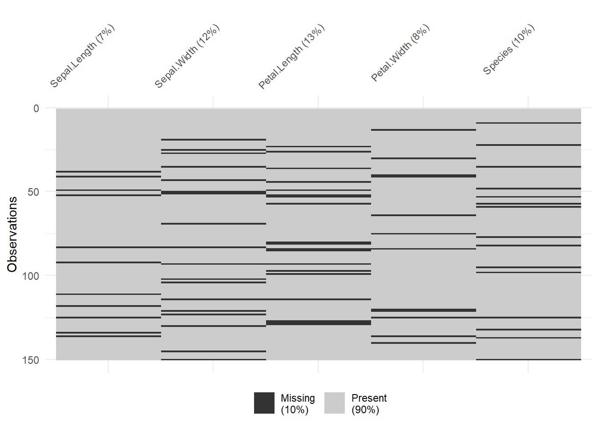
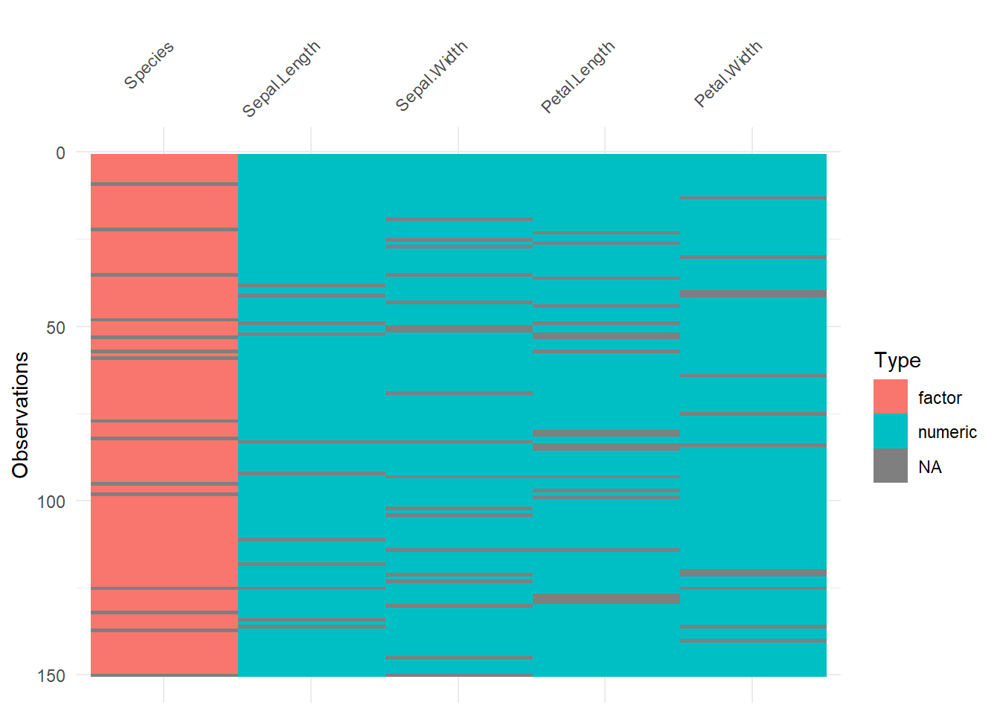
La fonction aggr du package VIM est particulièrement utile car elle combine l’histogramme des manques avec les combinaisons de manques (patterns) : par exemple, est-ce que Petal.Length et Petal.Width manquent souvent en même temps ?
Variables sorted by number of missings:
Variable Count
Petal.Width 0.12000000
Sepal.Width 0.10000000
Sepal.Length 0.09333333
Petal.Length 0.09333333
Species 0.09333333
Le graphique de gauche (Histogramme) donne la fréquence des valeurs manquantes pour chaque variable. C’est simple, efficace : plus la barre jaune est haute, plus la variable a de manques.
Le graphique de droite (La Matrice de Patterns), c’est le plus important. Chaque ligne représente une combinaison de données manquantes. Si on voit des cases jaunes dans plusieurs colonnes sur la même ligne, cela signifie que ces variables ont tendance à être manquantes simultanément.
Analyse des Corrélations de Manques
Enfin, nous cherchons à savoir si les données manquent de manière aléatoire ou si elles sont liées à une catégorie spécifique (ici, l’espèce).
# gg_miss_upset montre les intersections de manques entre variablesgg_miss_upset(iris_miss)
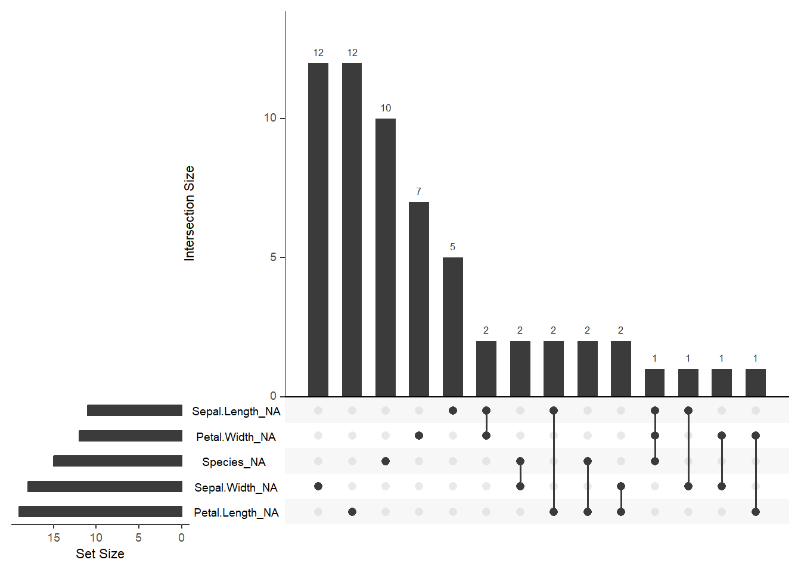
Ces graphiques permettent de vérifier si les NA sont équitablement répartis entre Setosa, Versicolor et Virginica.
# Exemple pour deux variablesggplot(iris_miss, aes(x = Species, fill =is.na(Sepal.Length))) +geom_bar(position ="fill") +labs(y ="Proportion", title ="NA de Sepal.Length par Espèce", fill ="Manquant")ggplot(iris_miss, aes(x = Species, fill =is.na(Sepal.Width))) +geom_bar(position ="fill") +labs(y ="Proportion", title ="NA de Sepal.Width par Espèce", fill ="Manquant")ggplot(iris_miss, aes(x = Species, fill =is.na(Petal.Length))) +geom_bar(position ="fill") +labs(y ="Proportion", title ="NA de Petal.Length par Espèce", fill ="Manquant")ggplot(iris_miss, aes(x = Species, fill =is.na(Petal.Width))) +geom_bar(position ="fill") +labs(y ="Proportion", title ="NA de Petal.Width par Espèce", fill ="Manquant")
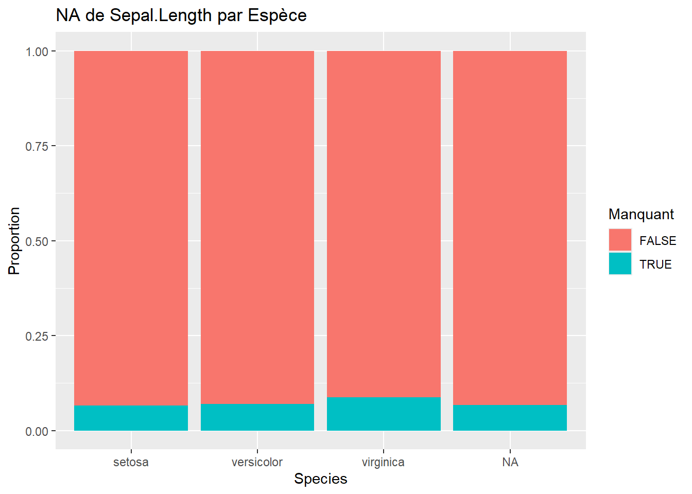
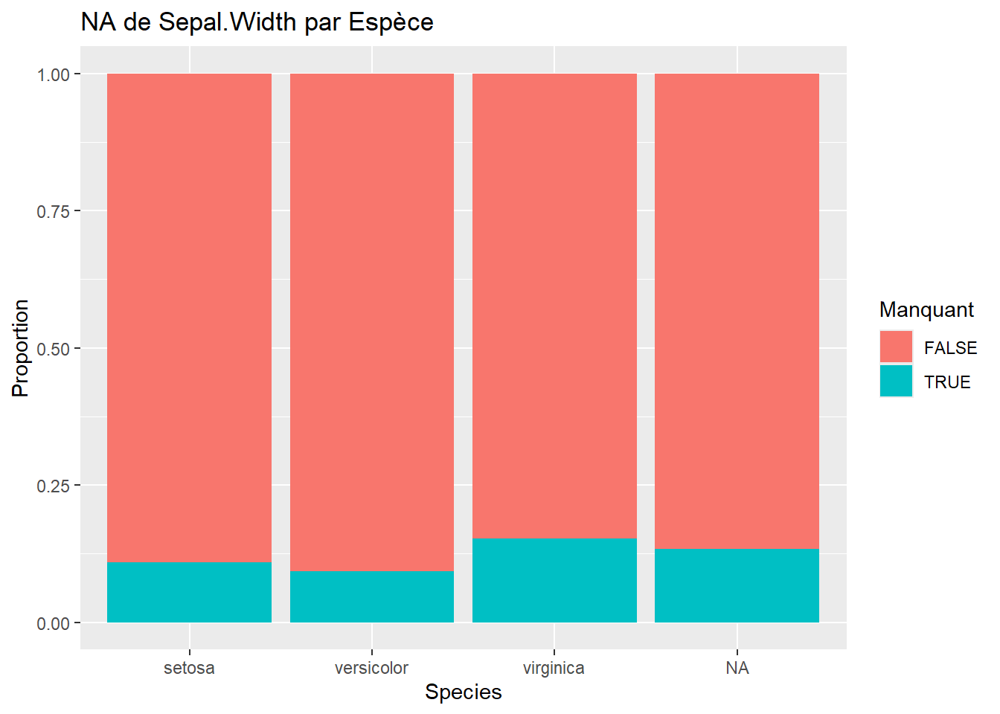
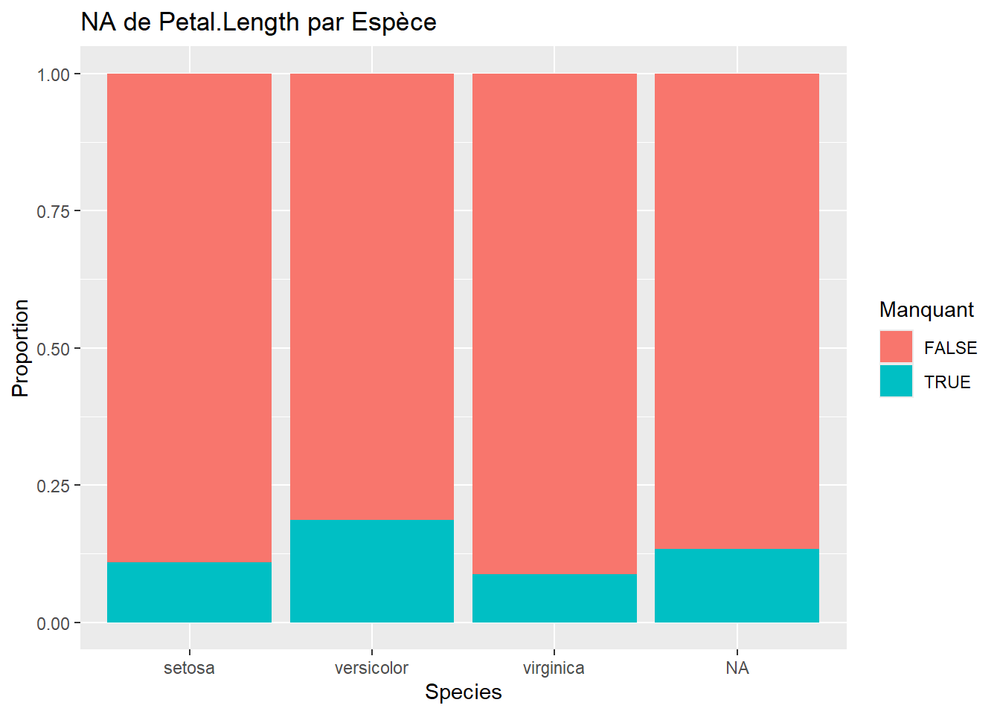
Traitement des valeurs manquantes
Le traitement des données manquantes est une étape charnière : un mauvais choix peut biaiser vos conclusions statistiques. Plusieurs options de traitement se présentent. La liste ci-dessous n’est pas exhaustive.
La suppression ciblée (Rapide mais risquée)
Cette méthode consiste à retirer les individus (lignes) présentant des données manquantes sur des variables critiques.
On utilise tidyr pour ne supprimer que ce qui est strictement nécessaire à une analyse précise.
library(tidyr)# Supprimer uniquement les lignes où les dimensions des pétales manquentiris_clean_rows <- iris_miss %>%drop_na(Petal.Length, Petal.Width)
Avec drop_na(Petal.Length, Petal.Width), on ne supprime pas toute la ligne si une autre colonne (comme Sepal.Length) est manquante, mais seulement si l’une des deux colonnes cibles est vide.
L’inconvénient est que cela réduit la taille de votre échantillon. Si les données ne manquent pas au hasard (ex: les plus grosses fleurs ont plus de données manquantes), on introduit un biais de sélection.
L’imputation statistique simple (Médiane)
L’imputation remplace le “vide” par une valeur estimée pour conserver l’intégralité des observations. Idéal si on veut une solution rapide sans introduire de modèles complexes.
On remplace chaque NA par la médiane de la colonne correspondante. On préfère souvent la médiane à la moyenne car elle est moins sensible aux valeurs extrêmes (outliers).
L’inconvénient est qu’elle réduit artificiellement la variance et ignore les relations entre les variables.
L’imputation prédictive avec mice
mice signifie Multivariate Imputation by Chained Equations. C’est l’une des méthodes les plus robustes car elle utilise les relations entre Sepal, Petal et Species pour deviner les valeurs.
# Vérification finale : il ne doit plus y avoir de NAsum(is.na(iris_model_mice))
[1] 0
Au lieu de mettre une mediane ou une moyenne partout, mice crée un modèle de régression pour prédire la valeur manquante en fonction des autres colonnes. Puis, il cherche dans les données réelles une valeur proche de cette prédiction pour remplir le manque
L’algorithme crée 5 versions différentes pour refléter l’incertitude. Si les 5 versions donnent des résultats proches, l’analyse est robuste.
L’avantage est que cela préserve la distribution des données et les corrélations entre variables.
Validation du traitement
Une bonne imputation ne doit pas modifier radicalement la distribution de vos données originales.
library(mice)library(ggplot2)library(tidyr)library(dplyr)# Fusionner les 3 états des données# On combine le vrai iris, celui avec NA, et celui imputécombinaison_complete <-bind_rows( iris %>%mutate(Version ="Réel (Sans aucune perte)"), iris_miss %>%mutate(Version ="Original (avec NA)"), iris_model_mice %>%mutate(Version ="Imputé (MICE)")) %>%# Transformation pour ggplotpivot_longer(cols =c(Sepal.Length, Sepal.Width, Petal.Length, Petal.Width), names_to ="Variable", values_to ="Valeur" )# Création du graphique à 3 densitésggplot(combinaison_complete, aes(x = Valeur, fill = Version, color = Version)) +# Tracé des densités avec une transparence ajustéegeom_density(alpha =0.25, size =0.8) +# Découpage en 4 fenêtresfacet_wrap(~Variable, scales ="free", ncol =2) +# Palette de couleurs contrastéesscale_fill_manual(values =c("Réel (Sans aucune perte)"="#2ecc71", "Original (avec NA)"="#3498db", "Imputé (MICE)"="#e74c3c" )) +scale_color_manual(values =c("Réel (Sans aucune perte)"="#27ae60","Original (avec NA)"="#2980b9","Imputé (MICE)"="#c0392b" )) +# Esthétiquetheme_minimal() +labs(title ="Validation de l'Imputation MICE vs Réalité",subtitle ="Comparaison : Jeu de données réel, avec manques, et après imputation",x ="Mesures (cm)",y ="Densité",fill ="Source :",color ="Source :" ) +theme(legend.position ="top",strip.text =element_text(face ="bold", size =11),panel.spacing =unit(1.2, "lines") )
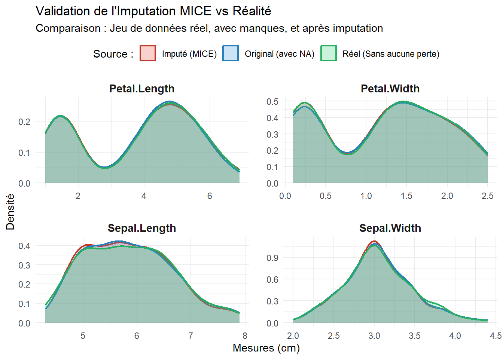
L’analyse comparative des densités révèle un chevauchement quasi parfait entre les différentes distributions. L’écart entre les courbes est si minime qu’il confirme la capacité du modèle à restaurer l’information manquante sans dénaturer la structure statistique originale. Par conséquent, nous pouvons valider cette imputation et considérer le jeu de données comme fiable pour la suite de nos analyses.
Statistiques Univariées
Aperçu global
3. Aperçu global
Utilisez une fonction simple pour obtenir un résumé statistique (min, max, moyenne, quartiles) de toutes les variables.
summary(iris_miss)
Sepal.Length Sepal.Width Petal.Length Petal.Width Species
Min. :4.300 Min. :2.000 Min. :1.00 Min. :0.100 setosa :45
1st Qu.:5.100 1st Qu.:2.800 1st Qu.:1.60 1st Qu.:0.300 versicolor:45
Median :5.800 Median :3.000 Median :4.25 Median :1.300 virginica :46
Mean :5.854 Mean :3.056 Mean :3.73 Mean :1.211 NA's :14
3rd Qu.:6.400 3rd Qu.:3.300 3rd Qu.:5.10 3rd Qu.:1.800
Max. :7.900 Max. :4.400 Max. :6.90 Max. :2.500
NA's :14 NA's :15 NA's :14 NA's :18
La fonction summary() est sans doute l’outil le plus polyvalent de R pour obtenir un aperçu statistique rapide de vos données. Sa particularité est qu’elle s’adapte à la nature des informations que vous lui soumettez. Sur les variables numériques (Quantitatives) elle affiche :
Min. / Max.
1er Quartile. / 3eme Quartile
Median
Mean
Sur les variables catégorielles (Qualitatives), elle compte simplement le nombre d’individus dans chaque catégorie.
Sur des valeurs manquantes (NA’s ), elle donne le compte exact. Si cette ligne n’apparaît pas, c’est que vos données sont complètes.
Le package Hmisc (pour Heavy Miscellaneous) est une véritable “boîte à outils” sur R qui contient des fonctions statistiques très puissantes. La fonction describe() est utilisée pour effectuer un etat des lieux complet pour chaque variable.
Pour les variables quantitatives, numériques (Sepal.Length, etc.), le rapport est divisé en quatre parties :
L’en-tête :
n : Nombre d’observations valides.
missing : Nombre de valeurs manquantes (indispensable pour l’imputation).
distinct : Nombre de valeurs uniques.
Info: Un indicateur de la richesse de l’information (densité des données).
Les statistiques de position :
Mean (Moyenne)
Gmd (Gini’s mean difference : une mesure de dispersion robuste).
Les percentiles. C’est ici que vous voyez la distribution réelle.
Les valeurs extrêmes ( Lowest et Highest ) :
Lowest : Les 5 plus petites valeurs.
Highest : Les 5 plus grandes valeurs.
Utilité : Cela permet de détecter des outliers (valeurs aberrantes) instantanément sans avoir besoin de tracer un boxplot.
Pour les variables qualitatives, catégorielles (Species), le rapport change pour s’adapter à la nature des données :
n : Nombre d’observations valides.
missing : Nombre de valeurs manquantes (indispensable pour l’imputation).
distinct : Nombre de valeurs uniques.
value : les modalités de la variable qualitatives
frequency : Le nombre d’occurrences pour chaque modalité
proportion : Le pourcentage de représentation de chaque modalité dans le jeu de données
Variables Quantitatives
La fonction descr() calcule uniquement les statistiques descriptives classiques pour vos variables numériques et les organise dans un tableau propre.
Mean
Moyenne
Std.Dev
Ecart-type
Min
Moyenne
Q1
1er quartile
Median
Mediane
Q3
3eme quartile
Max
Maximum
MAD
Median Absolute Deviation
IQR
L’étendue interquartile, soit Q3 − Q1
CV
Coefficient of Variation
Skewness
L’asymétrie de la distribution
Kurtosis
Paramètres de forme
Le coefficient of variation est le rapport entre l’écart-type et la moyenne.
Skewness correspond à l’asymétrie de la distribution. Si la valeur est nulle, alors la distribution est symétrique. Si la valeur est positive, alors la “Queue” de la distribution tend vers la droite (étalement des grandes valeurs). Si la valeur est négative, alors la “Queue” de la distribution tend vers la gauche (étalement des petites valeurs).
L’écart-type classique est très sensible aux valeurs extrêmes car il utilise les carrés des écarts à la moyenne. Une seule valeur aberrante peut faire exploser l’écart-type. Le MAD, lui, est “robuste”. Il utilise la médiane au lieu de la moyenne, ce qui le rend quasiment insensible aux données aberrantes.
Le Kurtosis est une mesure statistique qui décrit la forme de la “distribution” des données, et plus précisément, la manière dont les valeurs sont réparties dans les queues (les extrémités) par rapport au centre. Si la valeur est positive, alors il y a plus de valeurs extrêmes que dans une loi normale. Si la valeur est nulle, alors on a la courbe de référence, équilibrée. Si la valeur est négative, alors il y a peu ou pas de valeurs extrêmes.
# Calculer le MAD pour une variablemad(iris$Sepal.Length)
[1] 1.03782
# Comparaison rapide avec l'écart-typesd(iris$Sepal.Length)
Représentez la distribution de Sepal.Length à l’aide d’un histogramme et d’une boîte à moustaches (boxplot).
hist(iris$Sepal.Length, col ="orange", main ="Histogramme de Sepal.Length", xlab ="Longueur (cm)", ylab ="Fréquence")boxplot(iris$Sepal.Length, col ="yellow", main ="Boxplot de Sepal.Length",ylab ="Centimètres")
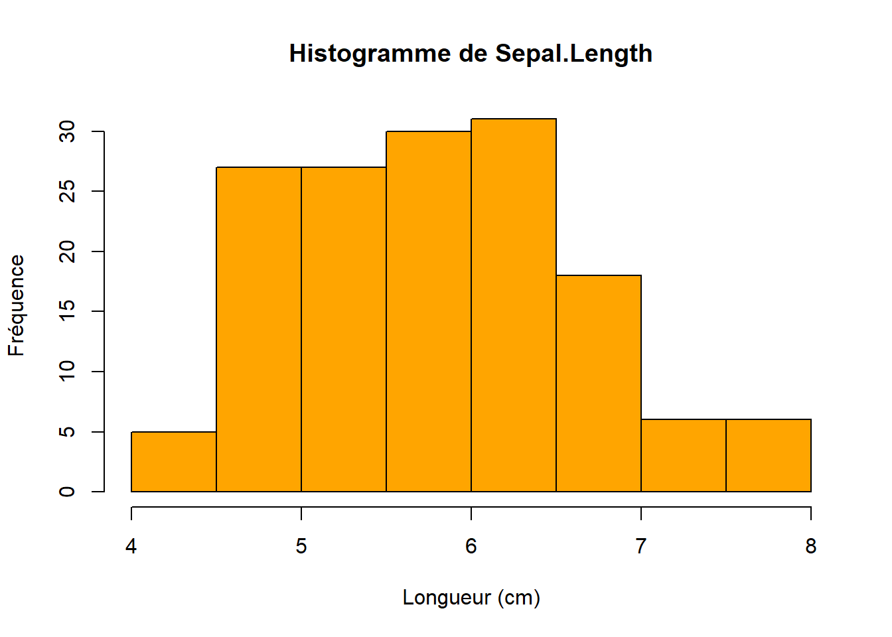
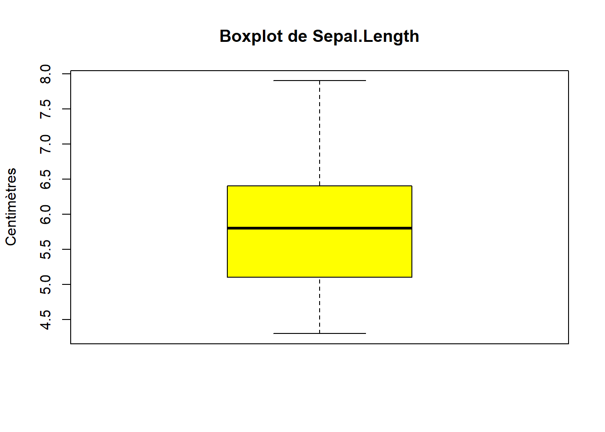
Pour personnaliser la largeur des colonnes (les “bins”) dans la fonction hist(), il faut utiliser l’argument breaks. Il existe deux manières principales de l’utiliser selon le besoin :
Définir le nombre de colonnes
Définir la largeur exacte
# Création d'une séquence de 4 à 8 avec un pas de 0.2colonnes <-seq(4, 8, by =0.2)
hist(iris$Sepal.Length, col ="orange", main ="Histogramme avec environ 20 colonnes", xlab ="Longueur (cm)", ylab ="Fréquence",breaks =20,xlim =c(4, 8))hist(iris$Sepal.Length, col ="orange", main ="Colonnes de largeur fixe (0.2 cm)", xlab ="Longueur (cm)", ylab ="Fréquence",breaks = colonnes,xlim =c(4, 8))
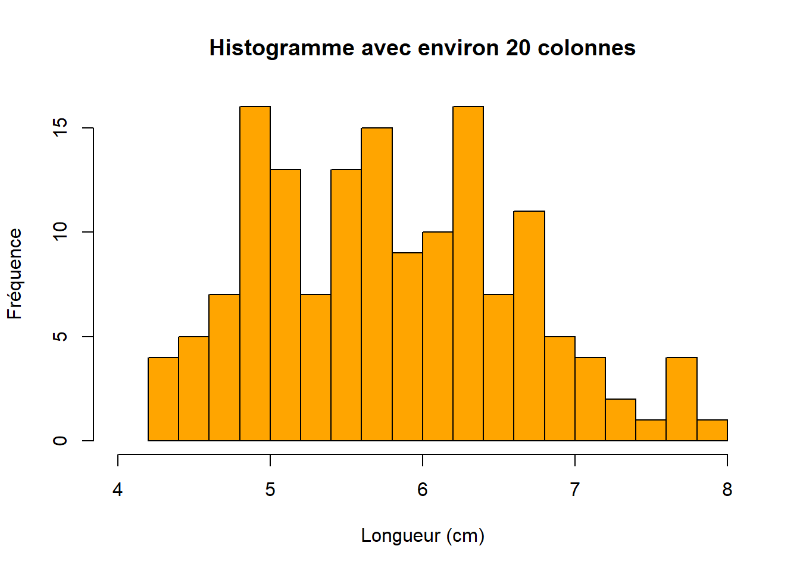
Variables Qualitatives
En prévision de la suite nous allons définir
deux nouvelles variables quantitatives : Petal.Surface, Sepal.Surface
et deux nouvelles variables qualitatites : Petal.Size, Sepal.Size
Sepal.Length Sepal.Width Petal.Length Petal.Width Species Petal.Surface
1 5.1 3.5 1.4 0.2 setosa 0.28
2 4.9 3.0 1.4 0.2 setosa 0.28
3 4.7 3.2 1.3 0.2 setosa 0.26
4 4.6 3.1 1.5 0.2 setosa 0.30
5 5.0 3.6 1.4 0.2 setosa 0.28
6 5.4 3.9 1.7 0.4 setosa 0.68
Petal.Size Sepal.Surface Sepal.Size
1 small 17.85 medium
2 small 14.70 small
3 small 15.04 small
4 small 14.26 small
5 small 18.00 medium
6 medium 21.06 big
6. Variables qualitatives
Affichez les effectifs et les proportions de la variable Species. Puis donner une ou plusieurs représentations graphiques.
effectifs_sp <-table(iris$Species)effectifs_spprop.table(effectifs_sp)barplot(effectifs_sp, col =c("#440154", "#21908C", "#FDE725"), main ="Répartition des observations par espèce",xlab ="Espèces", ylab ="Nombre d'individus")pie(effectifs_sp, col =c("#440154", "#21908C", "#FDE725"),main ="Proportions des espèces")
big medium small
setosa 0 14 36
versicolor 0 50 0
virginica 41 9 0
les totaux pour chaque ligne :
margin.table(table_1,1)
setosa versicolor virginica
50 50 50
et les totaux pour chaque colonne :
margin.table(table_1,2)
big medium small
41 73 36
si à présent on souhaite avoir ce tableau de contingence en fréquence on utilise la fonction prop.table
prop.table(table_1)
big medium small
setosa 0.00000000 0.09333333 0.24000000
versicolor 0.00000000 0.33333333 0.00000000
virginica 0.27333333 0.06000000 0.00000000
Avec le package gmodels on peut avoir un tableau de contingence complet. La fonction CrossTable() est l’une des fonction les plus riches pour l’analyse de tableaux contingence sur R.
En haut à gauche CrossTable affiche un petit guide pour nous aider à lire chaque cellules.
On peut également tracer un Treemap. C’est une méthode de visualisation spatiale qui permet de représenter des données hiérarchiques sous forme de rectangles imbriqués. Dans ce graphique, nous divisons d’abord l’espace total en trois zones de surfaces, correspondant aux trois espèces d’Iris (pour Species, n = 50 pour chacune). Chaque zone est ensuite compartimentée selon la taille des sépales (Sepal.Size), offrant ainsi une vue immédiate de la distribution des mesures au sein de chaque groupe botanique.
library(ggplot2)library(treemapify)library(dplyr)# Préparation des donnéesdata_treemap <- iris %>%group_by(Species, Sepal.Size) %>%summarise(nb =n(), .groups ='drop')# Tracé du Treemap hiérarchiqueggplot(data = data_treemap, aes(area = nb,fill = Species,subgroup = Species, # Niveau 1 : Les Espècessubgroup2 = Sepal.Size, # Niveau 2 : Les Tailleslabel = Sepal.Size)) +geom_treemap(color ="white") +geom_treemap_subgroup_border(colour ="black", size =3) +geom_treemap_subgroup2_border(colour ="black", size =2) +geom_treemap_text(colour ="white", place ="centre", grow =FALSE, size =12) +scale_fill_brewer(palette ="Set2") +labs(title ="Division hiérarchique : Espèces > Tailles de Sépales") +theme_minimal() +theme(legend.position ="right")
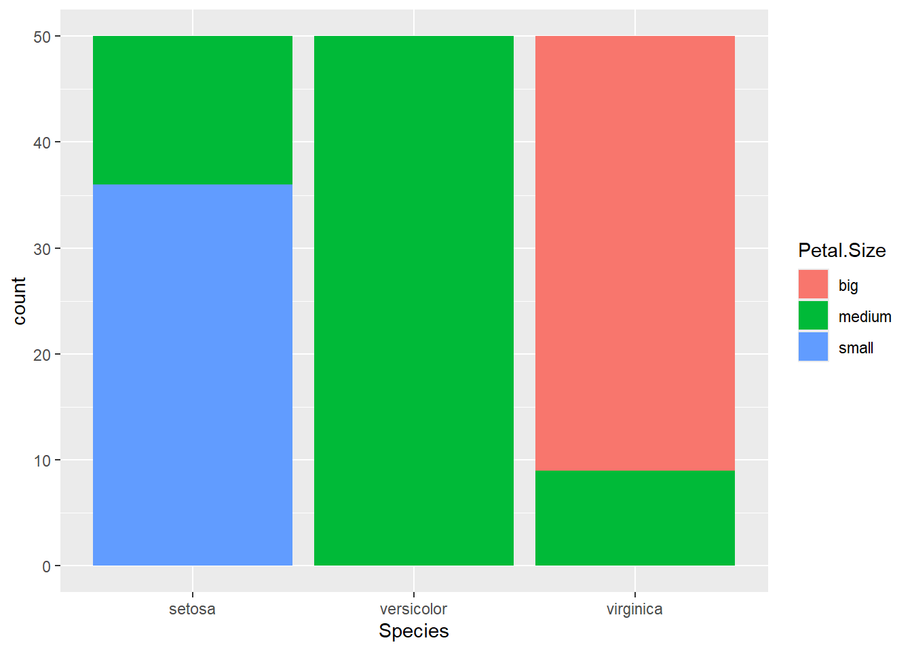
Une variable quantitative et une qualitative
Nous allons explorer comment les caractéristiques morphologiques des iris varient selon leur espèce.
Avant de visualiser les données, il est essentiel d’observer les chiffres. Nous utilisons deux méthodes pour segmenter les statistiques par espèce.
L’approche standard avec by(). C’est la qui permet d’appliquer une fonction à chaque sous-groupe.
iris[, "Species"]: setosa
Sepal.Length Sepal.Width Petal.Length Petal.Width
Min. :4.300 Min. :2.300 Min. :1.000 Min. :0.100
1st Qu.:4.800 1st Qu.:3.200 1st Qu.:1.400 1st Qu.:0.200
Median :5.000 Median :3.400 Median :1.500 Median :0.200
Mean :5.006 Mean :3.428 Mean :1.462 Mean :0.246
3rd Qu.:5.200 3rd Qu.:3.675 3rd Qu.:1.575 3rd Qu.:0.300
Max. :5.800 Max. :4.400 Max. :1.900 Max. :0.600
------------------------------------------------------------
iris[, "Species"]: versicolor
Sepal.Length Sepal.Width Petal.Length Petal.Width
Min. :4.900 Min. :2.000 Min. :3.00 Min. :1.000
1st Qu.:5.600 1st Qu.:2.525 1st Qu.:4.00 1st Qu.:1.200
Median :5.900 Median :2.800 Median :4.35 Median :1.300
Mean :5.936 Mean :2.770 Mean :4.26 Mean :1.326
3rd Qu.:6.300 3rd Qu.:3.000 3rd Qu.:4.60 3rd Qu.:1.500
Max. :7.000 Max. :3.400 Max. :5.10 Max. :1.800
------------------------------------------------------------
iris[, "Species"]: virginica
Sepal.Length Sepal.Width Petal.Length Petal.Width
Min. :4.900 Min. :2.200 Min. :4.500 Min. :1.400
1st Qu.:6.225 1st Qu.:2.800 1st Qu.:5.100 1st Qu.:1.800
Median :6.500 Median :3.000 Median :5.550 Median :2.000
Mean :6.588 Mean :2.974 Mean :5.552 Mean :2.026
3rd Qu.:6.900 3rd Qu.:3.175 3rd Qu.:5.875 3rd Qu.:2.300
Max. :7.900 Max. :3.800 Max. :6.900 Max. :2.500
Pour une analyse plus fine (incluant l’écart-type, l’erreur standard, le skewness et le kurtosis), la fonction describeBy du package psych offre un tableau plus complet.
On peut ensuite visualiser la dispersion avec des boxplot. Le graphique en boîte à moustaches (boxplot) permet de visualiser la médiane et l’étendue interquartile. Il est particulièrement efficace pour détecter visuellement les outliers et comparer la position centrale des groupes.
boxplot(iris$Sepal.Length ~ iris$Species,col =c("yellow"),main =paste("Boxplot pour la variable Sepal.Length, par espèce d'iris"),ylab ="Quantiles")
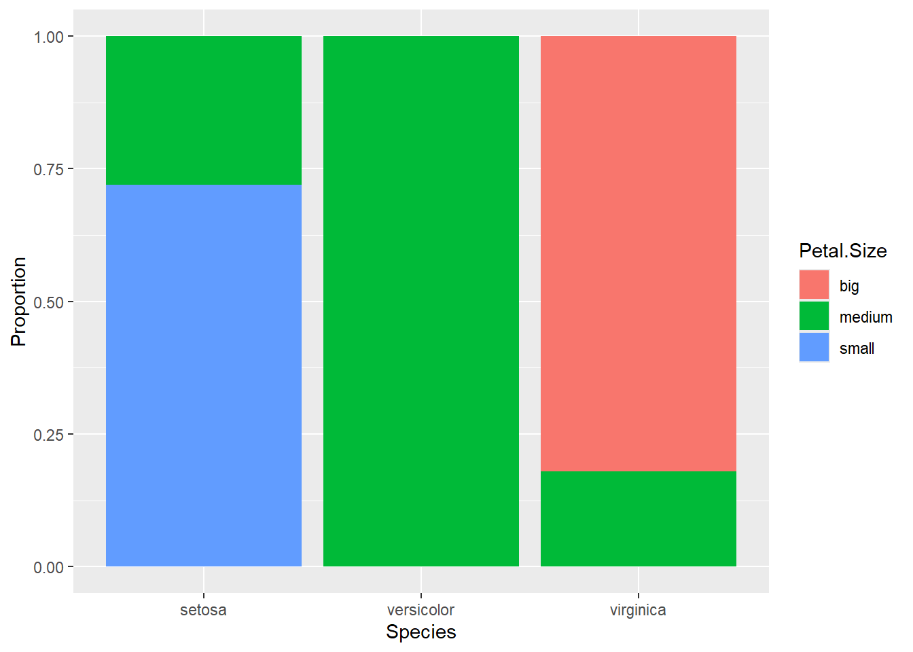
Le Violin Plot surpasse le boxplot en révélant la “silhouette” réelle des données : sa hauteur montre l’étendue des valeurs, tandis que sa largeur indique la densité de probabilité. Il permet de repérer instantanément des phénomènes invisibles autrement, comme une concentration extrême autour d’une valeur ou la présence de plusieurs pics (multimodalité).
Sur le dataset Iris, cet outil souligne les contrastes biologiques : le violon des Setosa, bas et trapu, confirme des sépales courts et très homogènes. À l’inverse, celui des Virginica, plus étiré, trahit une plus grande diversité de tailles. C’est le graphique idéal pour valider que chaque espèce possède sa propre structure de population, au-delà de sa simple moyenne.
library(ggplot2)ggplot(data = iris, aes(x = Species, y = Sepal.Length, fill = Species)) +geom_violin() +labs(title ="Distribution de la longueur des sépales par espèce",subtitle ="Visualisation par graphique en violon",x ="Espèce",y ="Longueur du Sépale (cm)") +theme_minimal()
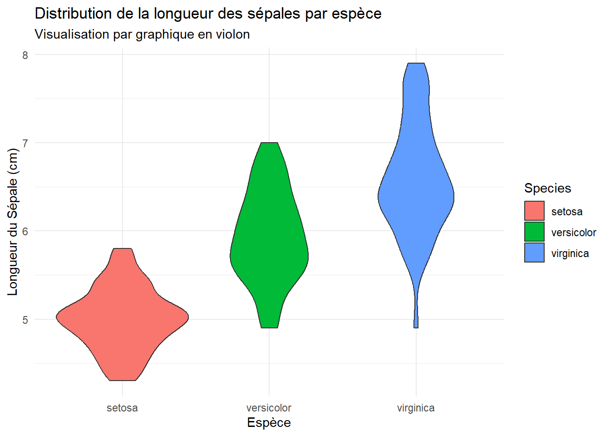
Pour une analyse plus avancées, nous pouvons superposer ici le violon (pour la forme) et le boxplot (pour les indicateurs précis). Nous enrichissons également le graphique en affichant la taille de l’échantillon (n) directement sur l’axe des abscisses, garantissant ainsi la transparence statistique sur la représentativité des groupes.
library(ggplot2)library(dplyr)library(hrbrthemes)library(viridis)# Calcul de la taille de l'échantillon par espècesample_size <- iris %>%group_by(Species) %>% dplyr::summarize(num =n())# Construction du graphiqueiris %>%left_join(sample_size, by ="Species") %>%mutate(myaxis =paste0(Species, "\n", "n=", num)) %>%ggplot(aes(x = myaxis, y = Sepal.Length, fill = Species)) +geom_violin(width =1.0, alpha =0.8) +geom_boxplot(width =0.1, color ="black", alpha =0.3) +scale_fill_viridis(discrete =TRUE, option ="D") +theme_ipsum(base_family ="sans") +theme(legend.position ="none",plot.title =element_text(size =12, face ="bold")) +labs(title ="Distribution de la longueur des sépales par espèce",subtitle ="Combinaison d'un graphique en violon et d'une boîte à moustaches",x ="",y ="Longueur du Sépale (cm)")
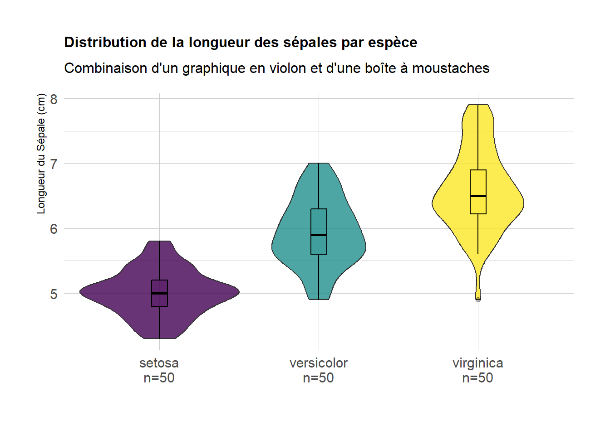
Deux variables quantitatives
Nous choisissons l’étude bivariée de la longueur et de la largeur des sépales. Nous commencons avec un nuage de points (Scatter Plot).
plot(iris$Sepal.Length,iris$Sepal.Width)
On peut ensuite tenter de voir s’il existe une correlation entre les deux variables étudiées. Le coefficient de corrélation de Pearson, est l’outil statistique qui mesure la force et la direction de la relation linéaire entre deux variables continues. Cette corrélation est calculée avec la fonction cor().
Le résultat de cor() est toujours compris entre -1 et 1.
Si cor() donne une valeur tres proche de 1, alors la corrélation est positive parfaite (si la longueur augmente, la largeur augmente proportionnellement)
Si cor() donne une valeur tres proche de 0, alors il y a une absence de relation linéaire.
Si cor() donne une valeur tres proche de -1, alors la corrélation est négative parfaite (si la longueur augmente, la largeur diminue).
On peut améliorer ce code avec le package ggplot2.
library(ggplot2)library(hrbrthemes)cor_val <-cor(iris$Sepal.Length, iris$Sepal.Width)ggplot(iris, aes(x = Sepal.Length, y = Sepal.Width)) +geom_point(color ="#69b3a2", size =2, alpha =0.8) +geom_smooth(method ="lm", color ="red", se =TRUE) +labs(title ="Analyse bivariée : Sépales (Longueur vs Largeur)",subtitle =paste("Coefficient de corrélation de Pearson :", round(cor_val, 3)),x ="Longueur du Sépale (cm)",y ="Largeur du Sépale (cm)" ) +theme_ipsum(base_family ="sans")
Le nuage de points révèle ici une structure particulière. Si l’on regarde l’ensemble des données (ligne rouge), la corrélation semble paradoxalement faible ou légèrement négative. C’est ce qu’on appelle le Paradoxe de Simpson en statistiques.
Le Paradoxe de Simpson survient lorsqu’une tendance observée dans plusieurs groupes de données s’inverse ou disparaît lorsqu’on combine ces groupes ensemble.
Si l’on regarde le nuage de points global (toutes espèces confondues), la corrélation semble négative (plus le sépale est long, moins il est large). Or, d’un point de vue biologique, c’est illogique. En réalité, cette tendance globale est une illusion d’optique statistique : elle est causée par le fait que les espèces sont décalées les unes par rapport aux autres dans l’espace du graphique.
Il est importer de remarque que le coefficient de corrélation est tres tres faible.
On peut essayer un autre couple de variables. Par exemple, la longueur du pétale avec sa surface.
library(ggplot2)library(hrbrthemes)cor_val <-cor(iris$Petal.Length, iris$Petal.Surface)ggplot(iris, aes(x = Petal.Length, y = Petal.Surface)) +geom_point(color ="#69b3a2", size =2, alpha =0.8) +geom_smooth(method ="lm", color ="red", se =TRUE) +labs(title ="Analyse bivariée : Sépales (Longueur vs Largeur)",subtitle =paste("Coefficient de corrélation de Pearson :", round(cor_val, 3)),x ="Longueur du Sépale (cm)",y ="Largeur du Sépale (cm)" ) +theme_ipsum(base_family ="sans")
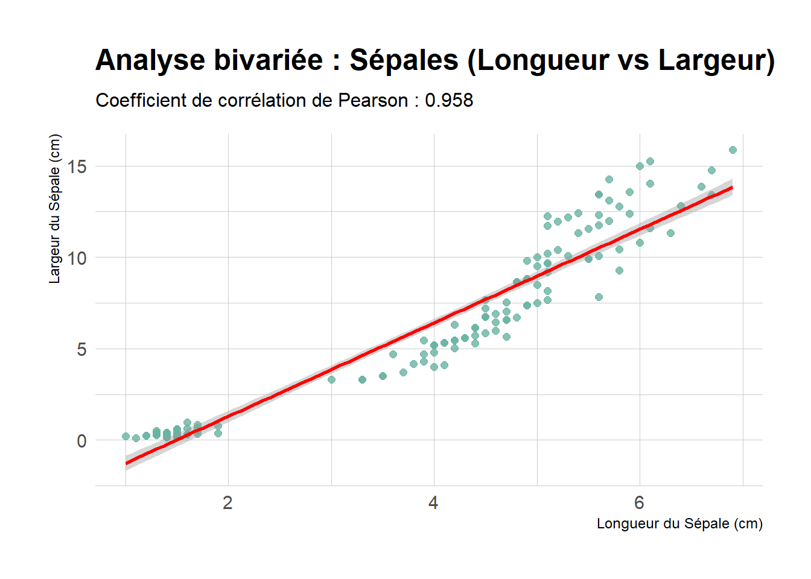
Cette fois le coéfficient de corrélation est tres proche de 1. Normal, Petal.Surface a été calculée à partir de Petal.Length.
Pour comprendre comment l’ensemble des variables quantitaitives du jeu de données interagissent les unes avec les autres, il est nécessaire de passer à une vision systémique. La matrice de corrélation répond à ce besoin en automatisant le calcul du coefficient de Pearson pour toutes les combinaisons possibles de variables, deux à deux.
# Charger les packageslibrary(ggplot2)library(corrplot)
var.quanti =sapply(iris, is.numeric)data.quanti = iris[, var.quanti]# Calculer la matrice de corrélationMatrice.Correlation <-cor(data.quanti, use ="complete.obs")# Créer la heatmap de corrélation avec des coefficients plus visiblescorrplot(Matrice.Correlation, method ="color", type ="upper", order ="hclust",tl.col ="black", tl.srt =45, addCoef.col ="black", # Couleur des coefficientscl.pos ="n", # Position de la légende de couleurcl.cex =1.2, # Taille de la légende de couleuraddCoefasPercent =TRUE, # Afficher les coefficients en pourcentagenumber.cex =0.8) # Taille des chiffres des coefficients
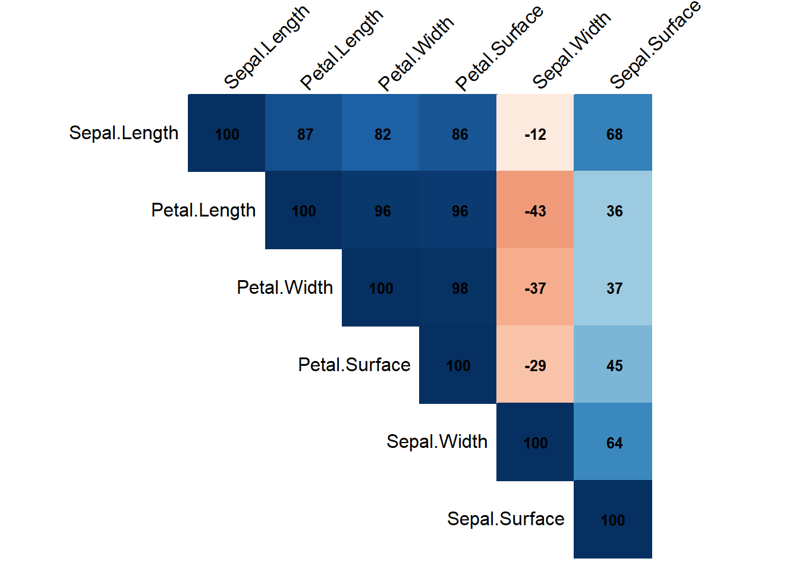
Pour lire cette matrice, il suffit de regarder l’intersection entre une ligne et une colonne : chaque case affiche la corrélation entre deux variables. La couleur indique la direction de la relation (le bleu pour une corrélation positive, le rouge pour une négative), tandis que l’intensité de la teinte et le pourcentage inscrit précisent la force du lien. Plus le score est proche de 100 %, plus les deux mesures sont liées (si l’une augmente, l’autre aussi) ; à l’inverse, un score proche de 0 % indique que les variables sont totalement indépendantes.
Pour aller plus loin
On peut bien entendu aller au dela du cas bivarié. Le nuage de points ci-desous offre une lecture plus globale de la structure du dataset Iris. En croisant la longueur et la largeur des sépales sur les axes cartésiens, nous utilisons la couleur pour distinguer les trois espèces. L’intérêt de ce tracé est de montrer la réalité brute des données : on observe ainsi la zone de transition naturelle entre Versicolor et Virginica, tout en confirmant le décrochage net des Setosa, qui occupent une niche morphologique isolée avec des sépales plus courts mais nettement plus larges.
On a analysé 3 variables ensembles : Sepal.Length, Sepal.Width, Species.
library(ggplot2)library(hrbrthemes)library(dplyr)# Calcul des moyennes pour chaque espècecentroids <- iris %>%group_by(Species) %>% dplyr::summarize(Sepal.Length =mean(Sepal.Length),Sepal.Width =mean(Sepal.Width))# Construction du graphiqueggplot(iris, aes(x = Sepal.Length, y = Sepal.Width, color = Species)) +geom_point(size =2.5, alpha =0.6) +geom_point(data = centroids, size =6, shape =18) +scale_color_brewer(palette ="Set1") +labs(title ="Analyse spatiale des sépales par espèce",subtitle ="Nuage de points brut avec marqueurs de moyenne (losanges)",x ="Longueur du Sépale (cm)",y ="Largeur du Sépale (cm)",color ="Espèce" ) +theme_ipsum(base_family ="sans") +theme(legend.position ="right")
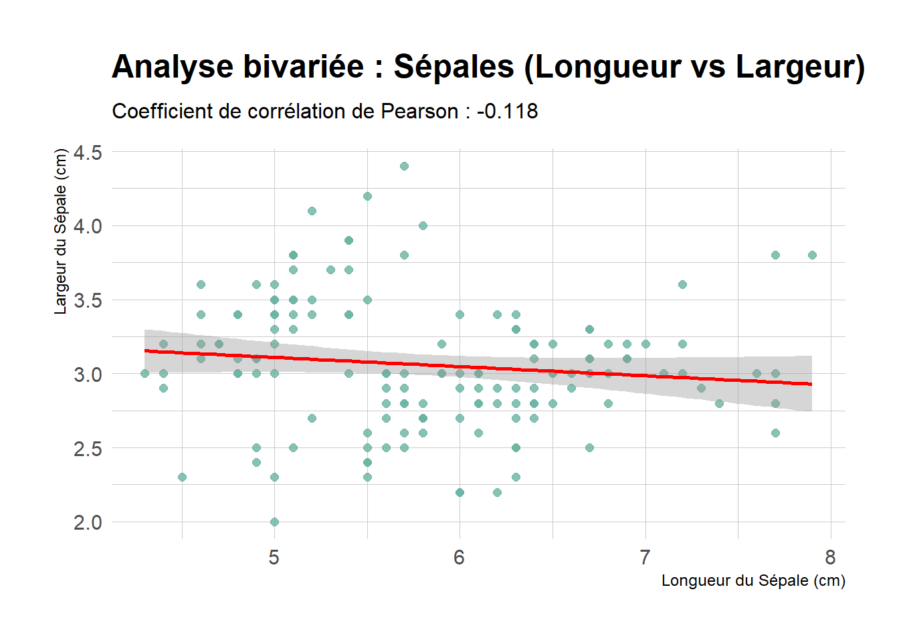
On peut tenter une exploration tridimensionnelle de Iris. En projetant simultanément la longueur des sépales (x), leur largeur (y) et la longueur des pétales (z), ce graphique en 3D permet une visualisation interactive est particulièrement révélatrice : elle met en évidence que l’espèce Setosa forme un “nuage” de points totalement isolé dans l’espace, tandis que les espèces Versicolor et Virginica, bien que proches, occupent des strates distinctes selon l’angle de vue choisi.
library(plotly)# Création du graphique 3Dplot_ly(data = iris, x =~Sepal.Length, y =~Sepal.Width, z =~Petal.Length, color =~Species, colors =c('#69b3a2', '#404080', '#ff7f0e'),type ="scatter3d", mode ="markers",marker =list(size =5, opacity =0.8)) %>%layout(title ="Exploration 3D des dimensions d'Iris",scene =list(xaxis =list(title ='Long. Sépale'),yaxis =list(title ='Larg. Sépale'),zaxis =list(title ='Long. Pétale') ) )
On peut tracer un nuage de points enrichi qui permet d’explorer simultanément quatre dimensions du jeu de données Iris. Au-delà des axes classiques (longueur et largeur des sépales), nous intégrons la largeur des pétales via la taille des points et l’espèce via la forme et la transparence. Cette approche multidimensionnelle vise à identifier des corrélations complexes et des regroupements naturels (clusters) au sein de la population de fleurs.
library(ggplot2)library(hrbrthemes)ggplot(iris, aes(x = Sepal.Length, y = Sepal.Width, shape = Species,alpha = Species,size = Petal.Width)) +geom_point(color ="#69b3a2") +labs(title ="Combinaison : Forme, Taille et Transparence",subtitle ="Analyse multidimensionnelle du dataset Iris",x ="Longueur du Sépale",y ="Largeur du Sépale",size ="Largeur Pétale",shape ="Espèce",alpha ="Espèce" ) +theme_ipsum(base_family ="sans") +scale_alpha_manual(values =c(0.4, 0.7, 1.0)) +# permet d'ajuster la taille des points pour plus de lisibilitéscale_size_continuous(range =c(1, 8))
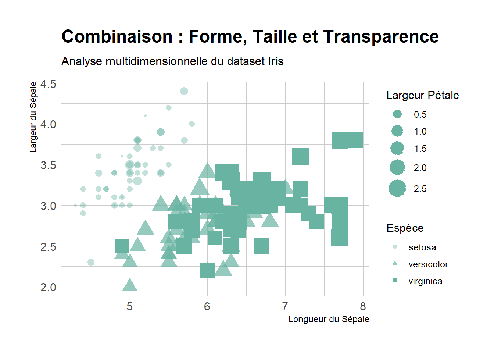
L’efficacité de ce graphique repose sur la hiérarchie des informations : l’oeil identifie d’abord la position spatiale (les mesures des sépales), puis distingue les espèces grâce aux variations de formes (rond, triangle, carré) et de transparence (alpha). L’utilisation de scale_size_continuous amplifie visuellement les différences de largeur de pétales, permettant de remarquer immédiatement que les fleurs ayant les plus grands sépales possèdent généralement aussi les pétales les plus larges.
Exercice 2 - World Happiness
A l’aide du jeu de données World-Happiness-2015.csv vous allez réaliser une analyse descriptive complète en utilisant les outils vu à l’exercice précédent sur le jeu de données iris.
Le fichier World-Happiness-2015.csv du World Happiness Report 2015 contient les données utilisées pour classer les pays selon leur niveau de bonheur en 2015.
Les données du World Happiness Report 2015 sont le résultat d’un projet collaboratif mené par de nombreux experts. Le rapport de 2015 a été édité par trois figures centrales :
John F. Helliwell (Université de la Colombie-Britannique et CIFAR)
Richard Layard (London School of Economics)
Jeffrey D. Sachs (Université de Columbia et Directeur du Earth Institute)
La grande majorité des données (notamment le score de bonheur) provient du Gallup World Poll. Gallup mène des sondages réguliers dans plus de 150 pays. Le rapport est publié par le Sustainable Development Solutions Network (SDSN), une initiative mondiale lancée par les Nations Unies.
Voici la présentation de toutes les variables (colonnes) présentes dans ce fichier :
Variables d’identification
Country : Le nom du pays concerné
Region : La région géographique à laquelle appartient le pays (ex: Western Europe, North America, Sub-Saharan Africa, etc.)
Variables de classement et de score global
Happiness Rank : Le rang du pays parmi les 158 pays étudiés (le numéro 1 étant le pays le plus heureux)
Happiness Score : Une note de 0 à 10 calculée à partir des sondages de l’échelle de Cantril (on demande aux gens d’évaluer leur vie actuelle sur une échelle où 10 est la meilleure vie possible)
Standard Error : L’erreur type du score de bonheur. Elle représente l’incertitude statistique autour du score moyen
Facteurs explicatifs (Les “Contributions”)
Attention : Dans ce fichier, les valeurs numériques pour les variables suivantes ne sont pas les valeurs brutes (comme le PIB réel), mais plutôt la mesure dans laquelle chaque facteur contribue à expliquer le score de bonheur par rapport à un pays fictif appelé “Dystopie”.
Economy (GDP per Capita) : La contribution du Produit Intérieur Brut par habitant au score de bonheur
Family : La contribution du soutien social (avoir quelqu’un sur qui compter en cas de besoin)
Health (Life Expectancy) : La contribution de l’espérance de vie en bonne santé
Freedom : La contribution de la liberté perçue à faire des choix de vie
Trust (Government Corruption) : La contribution de la perception de l’absence de corruption dans le gouvernement et les entreprises
Generosity : La contribution de la générosité (basée sur les dons récents)
Variable de référence, Dystopia Residual : La “Dystopie” est un pays imaginaire qui aurait les valeurs les plus basses du monde pour chacun des six facteurs ci-dessus. Le “Residual” (résidu) est la somme du score de base de la Dystopie plus la part du bonheur que les six facteurs précédents n’arrivent pas à expliquer mathématiquement pour chaque pays.
En résumé si vous additionnez les valeurs des Facteurs explicatifs plus la variable de référence, vous obtiendrez exactement le Happiness Score du pays.
1. Importation des données
Télécharger le jeu de donnnées World-Happiness-2015.csv et enregistrez le dans votre dossier data_raw. Importez ensuite ce jeu de données dans RStudio.
Country Region Happiness.Rank Happiness.Score Standard.Error
1 Switzerland Western Europe 1 7.587 0.03411
2 Iceland Western Europe 2 7.561 0.04884
3 Denmark Western Europe 3 7.527 0.03328
4 Norway Western Europe 4 7.522 0.03880
5 Canada North America 5 7.427 0.03553
6 Finland Western Europe 6 7.406 0.03140
Economy..GDP.per.Capita. Family Health..Life.Expectancy. Freedom
1 1.39651 1.34951 0.94143 0.66557
2 1.30232 1.40223 0.94784 0.62877
3 1.32548 1.36058 0.87464 0.64938
4 1.45900 1.33095 0.88521 0.66973
5 1.32629 1.32261 0.90563 0.63297
6 1.29025 1.31826 0.88911 0.64169
Trust..Government.Corruption. Generosity Dystopia.Residual
1 0.41978 0.29678 2.51738
2 0.14145 0.43630 2.70201
3 0.48357 0.34139 2.49204
4 0.36503 0.34699 2.46531
5 0.32957 0.45811 2.45176
6 0.41372 0.23351 2.61955
2. Travail à faire
Effectuez une analyse descriptive complète du jeu de données World-Happiness-2015.csv. Pour ce faire, réutilisez les outils et les fonctions que vous avez manipulés lors de l’exercice sur le jeu de données iris.